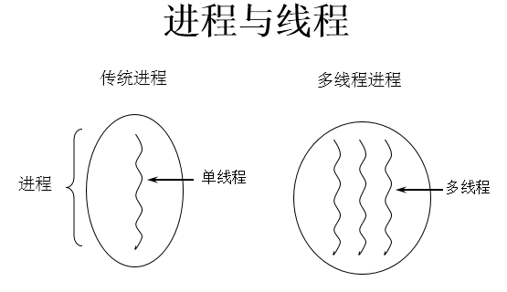
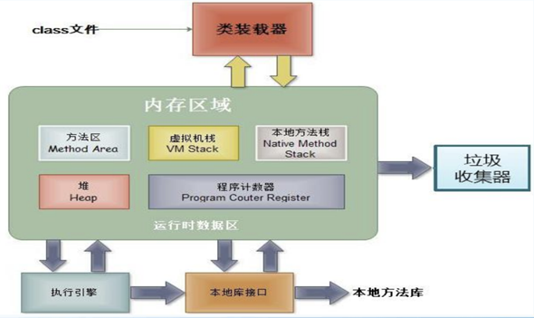
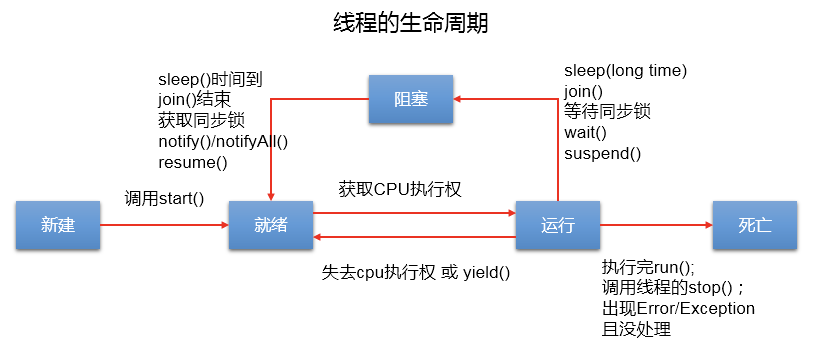
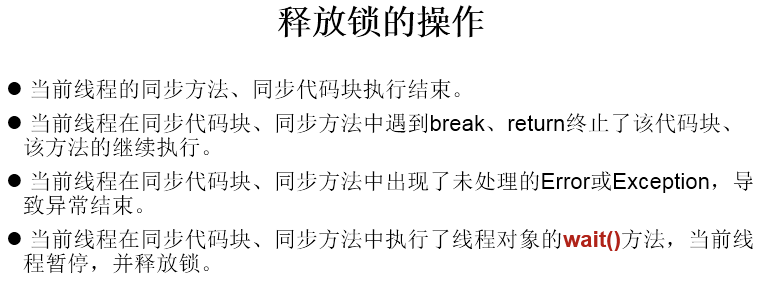
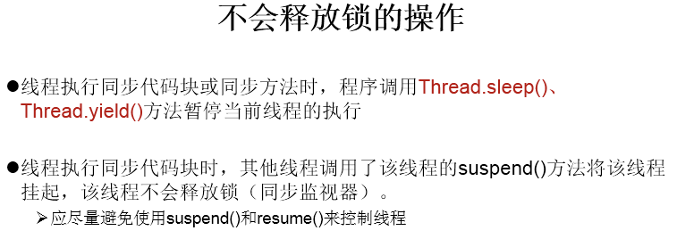

1 程序、进程、线程的理解
程序(programm)
- 概念：是为完成特定任务、用某种语言编写的一组指令的集合。即指一段静态的代码。
进程(process)
- 概念：程序的一次执行过程，或是正在运行的一个程序。
- 说明：进程作为资源分配的单位，系统在运行时会为每个进程分配不同的内存区域
线程(thread)
- 概念：进程可进一步细化为线程，是一个程序内部的一条执行路径。
- 说明：线程作为调度和执行的单位，每个线程拥独立的运行栈和程序计数器(pc)，线程切换的开销小。

内存结构：

- 进程可以细化为多个线程。
- 每个线程，拥有自己独立的：栈、程序计数器。
- 多个线程，共享同一个进程中的结构：方法区、堆。
2 并行与并发
单核CPU与多核CPU的理解：
- 单核CPU，其实是一种假的多线程，因为在一个时间单元内，也只能执行一个线程的任务。例如：虽然有多车道，但是收费站只有一个工作人员在收费，只有收了费才能通过，那么CPU就好比收费人员。如果某个人不想交钱，那么收费人员可以把他“挂起”（晾着他，等他想通了，准备好了钱，再去收费。）但是因为CPU时间单元特别短，因此感觉不出来。
- 如果是多核的话，才能更好的发挥多线程的效率。（现在的服务器都是多核的）
- 一个Java应用程序java.exe，其实至少三个线程：main()主线程，gc()垃圾回收线程，异常处理线程。当然如果发生异常，会影响主线程。
并行与并发的理解
- 并行：多个CPU同时执行多个任务。比如：多个人同时做不同的事。
- 并发：一个CPU(采用时间片)同时执行多个任务。比如：秒杀、多个人做同一件事。
3 创建多线程的两种方式
方式一：继承Thread类的方式：
- 创建一个继承于Thread类的子类
- 重写Thread类的run() –> 将此线程执行的操作声明在run()中
- 创建Thread类的子类的对象
- 通过此对象调用start()：①启动当前线程 ② 调用当前线程的run()
说明两个问题：
- 我们启动一个线程，必须调用start()，不能调用run()的方式启动线程。
- 如果再启动一个线程，必须重新创建一个Thread子类的对象，调用此对象的start().
方式二：实现Runnable接口的方式：
- 创建一个实现了Runnable接口的类
- 实现类去实现Runnable中的抽象方法：run()
- 创建实现类的对象
- 将此对象作为参数传递到Thread类的构造器中，创建Thread类的对象
- 通过Thread类的对象调用start()
两种方式的对比：
- 开发中：优先选择：实现Runnable接口的方式
- 原因：
- 实现的方式没类的单继承性的局限性
- 实现的方式更适合来处理多个线程共享数据的情况。
- 联系：public class Thread implements Runnable
- 相同点：
- 两种方式都需要重写run(),将线程要执行的逻辑声明在run()中。
- 目前两种方式，要想启动线程，都是调用的Thread类中的start()。
4 Thread类中的常用方法
- start():启动当前线程；调用当前线程的run()
- run(): 通常需要重写Thread类中的此方法，将创建的线程要执行的操作声明在此方法中
- currentThread():静态方法，返回执行当前代码的线程
- getName():获取当前线程的名字
- setName():设置当前线程的名字
- yield():释放当前cpu的执行权
- join():在线程a中调用线程b的join(),此时线程a就进入阻塞状态，直到线程b完全执行完以后，线程a才结束阻塞状态。
- stop():已过时。当执行此方法时，强制结束当前线程。
- sleep(long millitime):让当前线程“睡眠”指定的millitime毫秒。在指定的millitime毫秒时间内，当前线程是阻塞状态。
- isAlive():判断当前线程是否存活
线程的优先级：
- MAX_PRIORITY：10
- MIN _PRIORITY：1
- NORM_PRIORITY：5 –> 默认优先级
如何获取和设置当前线程的优先级：
- getPriority():获取线程的优先级
- setPriority(int p):设置线程的优先级
说明：高优先级的线程要抢占低优先级线程cpu的执行权。但是只是从概率上讲，高优先级的线程高概率的情况下被执行。并不意味着只当高优先级的线程执行完以后，低优先级的线程才执行。
线程通信：wait() / notify() / notifyAll() :此三个方法定义在Object类中的。
补充：线程的分类。一种是守护线程，一种是用户线程。
5 线程的生命周期

- 生命周期关注两个概念：状态、相应的方法
- 关注：状态a–>状态b:哪些方法执行了（回调方法）；某个方法主动调用：状态a–>状态b
- 阻塞：临时状态，不可以作为最终状态；死亡：最终状态。
6 线程的同步机制
6.1 线程的安全问题
例子：创建个窗口卖票，总票数为100张.使用实现Runnable接口的方式
- 问题：卖票过程中，出现了重票、错票 –>出现了线程的安全问题
- 问题出现的原因：当某个线程操作车票的过程中，尚未操作完成时，其他线程参与进来，也操作车票。
- 如何解决：当一个线程a在操作ticket的时候，其他线程不能参与进来。直到线程a操作完ticket时，其他线程才可以开始操作ticket。这种情况即使线程a出现了阻塞，也不能被改变。
Java解决方案：同步机制
6.2 解决方式一：同步代码块
synchronized(同步监视器){
//需要被同步的代码
}- 操作共享数据的代码，即为需要被同步的代码。 –> 不能包含代码多了，也不能包含代码少了。
- 共享数据：多个线程共同操作的变量。比如：ticket就是共享数据。
- 同步监视器，俗称：锁。任何一个类的对象，都可以充当锁。要求：多个线程必须要共用同一把锁。
补充：
- 在实现Runnable接口创建多线程的方式中，我们可以考虑使用this充当同步监视器。
- 在继承Thread类创建多线程的方式中，慎用this充当同步监视器，考虑使用当前类充当同步监视器。
6.3 解决方式二：同步方法
如果操作共享数据的代码完整的声明在一个方法中，我们不妨将此方法声明同步的。
关于同步方法的总结：
- 同步方法仍然涉及到同步监视器，只是不需要我们显式的声明。
- 非静态的同步方法，同步监视器是：this；静态的同步方法，同步监视器是：当前类本身。
6.4 解决方式三：Lock锁（JDK 5.0新增）
使用的优先顺序：
Lock —> 同步代码块（已经进入了方法体，分配了相应资源 ) —> 同步方法（在方法体之外）
面试题：synchronized 与 Lock的异同？
- 相同：二者都可以解决线程安全问题
- 不同：
- synchronized机制在执行完相应的同步代码以后，自动的释放同步监视器
- Lock需要手动的启动同步lock()，同时结束同步也需要手动的实现unlock()
面试题：Java是如何解决线程安全问题的，有几种方式？并对比几种方式的不同
面试题：synchronized和Lock方式解决线程安全问题的对比
6.5 同步机制的利弊
同步的方式，解决了线程的安全问题。—好处
操作同步代码时，只能一个线程参与，其他线程等待。相当于是一个单线程的过程，效率低。
6.6 线程安全的单例模式（懒汉式）
class Bank{
private Bank(){}
private static Bank instance = null;
public static Bank getInstance(){
//方式一：效率稍差
// synchronized (Bank.class) {
// if(instance == null){
//
// instance = new Bank();
// }
// return instance;
// }
//方式二：效率更高
if(instance == null){
synchronized (Bank.class) {
if(instance == null){
instance = new Bank();
}
}
}
return instance;
}
}6.7 死锁问题
死锁的理解：不同的线程分别占用对方需要的同步资源不放弃，都在等待对方放弃自己需要的同步资源，就形成了线程的死锁。
说明：
- 出现死锁后，不会出现异常，不会出现提示，只是所的线程都处于阻塞状态，无法继续
- 我们使用同步时，要避免出现死锁。
public static void main(String[] args) {
StringBuffer s1 = new StringBuffer();
StringBuffer s2 = new StringBuffer();
new Thread(){
@Override
public void run() {
synchronized (s1){
s1.append("a");
s2.append("1");
try {
Thread.sleep(100);
} catch (InterruptedException e) {
e.printStackTrace();
}
synchronized (s2){
s1.append("b");
s2.append("2");
System.out.println(s1);
System.out.println(s2);
}
}
}
}.start();
new Thread(new Runnable() {
@Override
public void run() {
synchronized (s2){
s1.append("c");
s2.append("3");
try {
Thread.sleep(100);
} catch (InterruptedException e) {
e.printStackTrace();
}
synchronized (s1){
s1.append("d");
s2.append("4");
System.out.println(s1);
System.out.println(s2);
}
}
}
}).start();
}7 线程通信
7.1 涉及线程通信的方法
线程通信涉及到的三个方法：
- wait():一旦执行此方法，当前线程就进入阻塞状态，并释放同步监视器。
- notify():一旦执行此方法，就会唤醒被wait的一个线程。如果有多个线程被wait，就唤醒优先级高的那个。
- notifyAll():一旦执行此方法，就会唤醒所有被wait的线程。
说明：
- wait()，notify()，notifyAll()三个方法必须使用在同步代码块或同步方法中。
- wait()，notify()，notifyAll()三个方法的调用者必须是同步代码块或同步方法中的同步监视器。否则，会出现IllegalMonitorStateException异常。
- wait()，notify()，notifyAll()三个方法是定义在java.lang.Object类中。
7.2 面试题：sleep() 和 wait()的异同？
- 相同点：一旦执行方法，都可以使得当前的线程进入阻塞状态。
- 不同点：
- 两个方法声明的位置不同：Thread类中声明sleep() , Object类中声明wait()。
- 调用的要求不同：sleep()可以在任何需要的场景下调用。 wait()必须使用在同步代码块或同步方法中。
- 关于是否释放同步监视器：如果两个方法都使用在同步代码块或同步方法中，sleep()不会释放锁，wait()会释放锁。
7.3 小结关于锁的操作：


8 JDK 5.0新增线程创建的方式
8.1 新增方式一：实现Callable接口
//1.创建一个实现Callable的实现类
class NumThread implements Callable{
//2.实现call方法，将此线程需要执行的操作声明在call()中
@Override
public Object call() throws Exception {
int sum = 0;
for (int i = 1; i <= 100; i++) {
if(i % 2 == 0){
System.out.println(i);
sum += i;
}
}
return sum;
}
}
public class ThreadNew {
public static void main(String[] args) {
//3.创建Callable接口实现类的对象
NumThread numThread = new NumThread();
//4.将此Callable接口实现类的对象作为传递到FutureTask构造器中，创建FutureTask的对象
FutureTask futureTask = new FutureTask(numThread);
//5.将FutureTask的对象作为参数传递到Thread类的构造器中，创建Thread对象，并调用start()
new Thread(futureTask).start();
try {
//6.获取Callable中call方法的返回值
//get()返回值即为FutureTask构造器参数Callable实现类重写的call()的返回值。
Object sum = futureTask.get();
System.out.println("总和为：" + sum);
} catch (InterruptedException e) {
e.printStackTrace();
} catch (ExecutionException e) {
e.printStackTrace();
}
}
}如何理解实现Callable接口的方式创建多线程比实现Runnable接口创建多线程方式强大？
- call()可以返回值的。
- call()可以抛出异常，被外面的操作捕获，获取异常的信息
- Callable是支持泛型的
8.2 新增方式二：使用线程池
class NumberThread implements Runnable{
@Override
public void run() {
for(int i = 0;i <= 100;i++){
if(i % 2 == 0){
System.out.println(Thread.currentThread().getName() + ": " + i);
}
}
}
}
class NumberThread1 implements Runnable{
@Override
public void run() {
for(int i = 0;i <= 100;i++){
if(i % 2 != 0){
System.out.println(Thread.currentThread().getName() + ": " + i);
}
}
}
}
public class ThreadPool {
public static void main(String[] args) {
//1. 提供指定线程数量的线程池
ExecutorService service = Executors.newFixedThreadPool(10);
ThreadPoolExecutor service1 = (ThreadPoolExecutor) service;
//设置线程池的属性
// System.out.println(service.getClass());
// service1.setCorePoolSize(15);
// service1.setKeepAliveTime();
//2.执行指定的线程的操作。需要提供实现Runnable接口或Callable接口实现类的对象
service.execute(new NumberThread());//适合适用于Runnable
service.execute(new NumberThread1());//适合适用于Runnable
// service.submit(Callable callable);//适合使用于Callable
//3.关闭连接池
service.shutdown();
}
}好处：
- 提高响应速度（减少了创建新线程的时间）
- 降低资源消耗（重复利用线程池中线程，不需要每次都创建）
- 便于线程管理
- corePoolSize：核心池的大小
- maximumPoolSize：最大线程数
- keepAliveTime：线程没任务时最多保持多长时间后会终止
面试题：Java中多线程的创建有几种方式？四种。